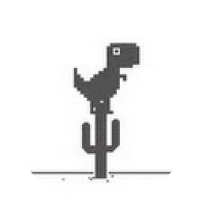

A collection of microcontroller projects from first prototype to finished build. Wiring diagrams, code, parts lists, and everything in between.
Click any project to see the full build guide.
| Qty | Component | Notes | Link |
|---|

Hi! I'm a hobbyist maker with a passion for building things at the intersection of hardware and software. I've been tinkering with microcontrollers since I was a kid, and this site is my way of documenting what I build and sharing it with others who want to do the same.
Most of my projects are built around Arduino and Raspberry Pi. I love the challenge of making hardware do something useful: whether that's automating something in my home, building a sensor network, or just making something that blinks in an interesting way.
Feel free to reach out if you have questions about any of the projects, spot a bug in my code, or just want to chat about electronics.